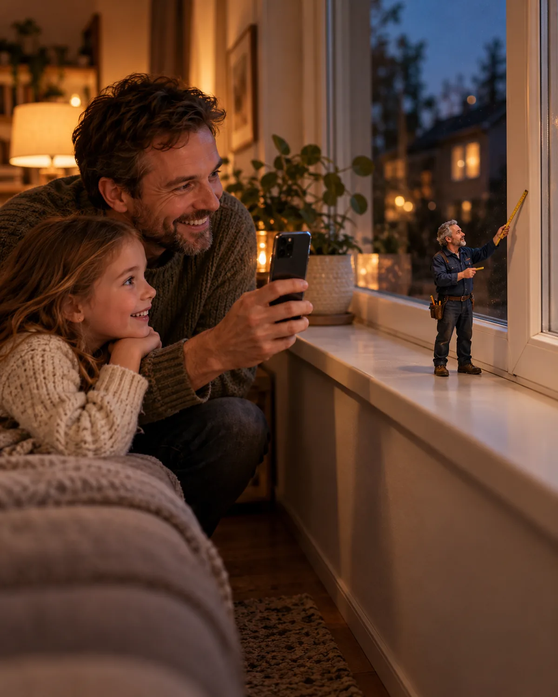
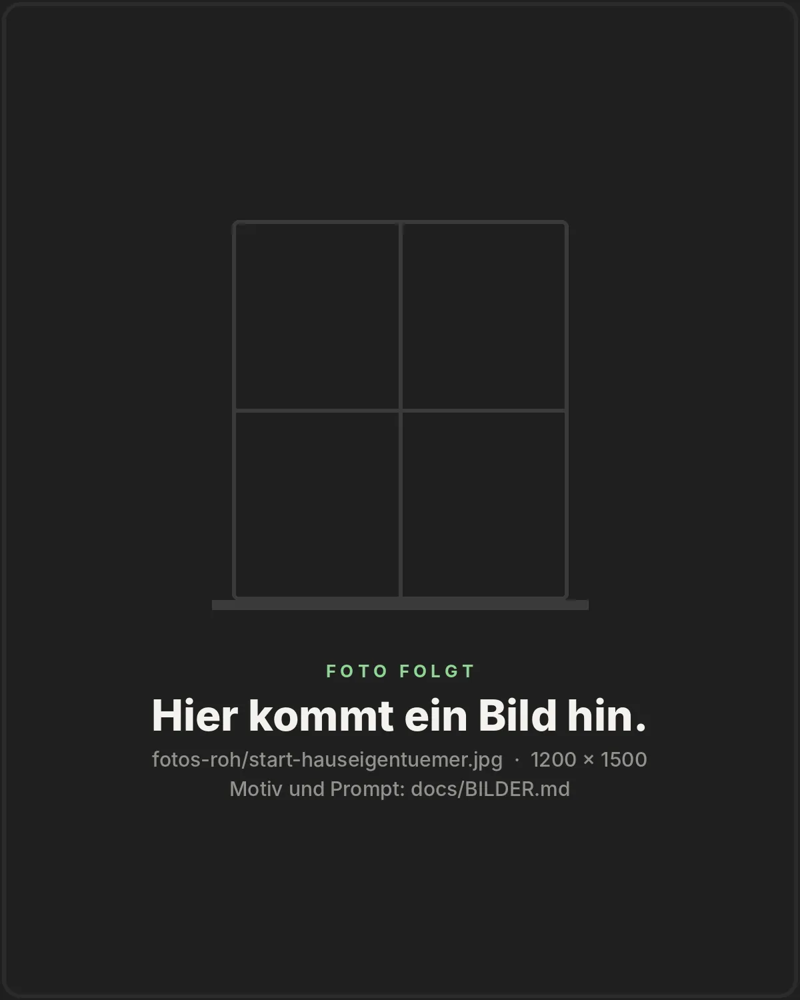
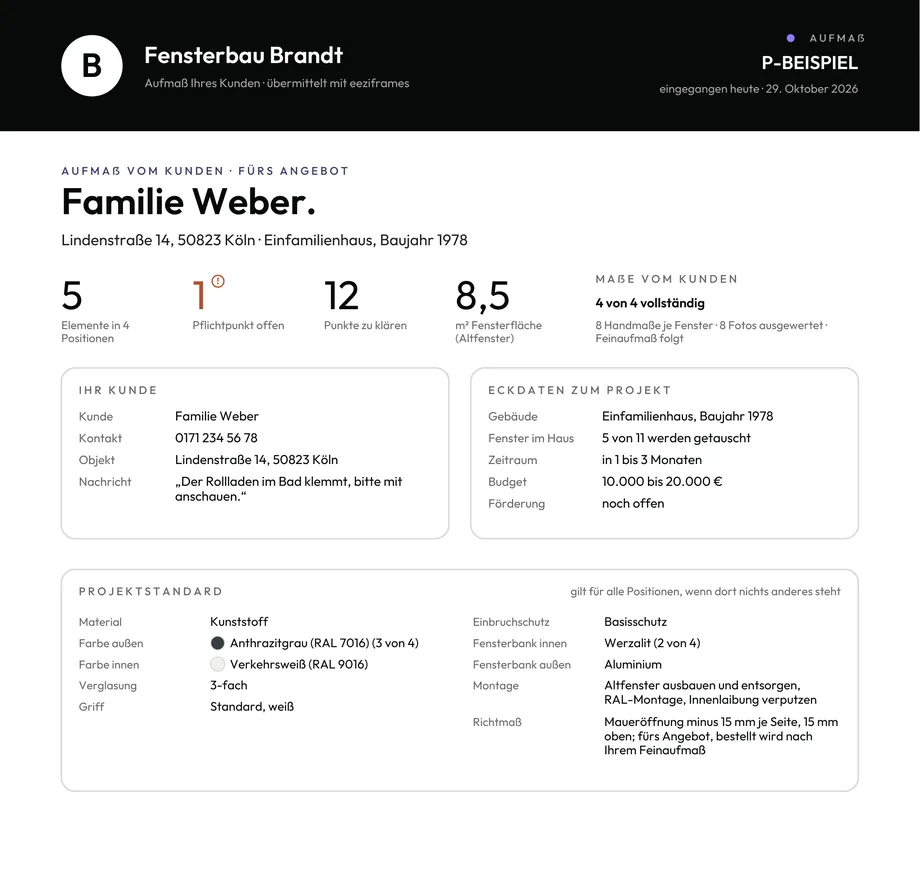
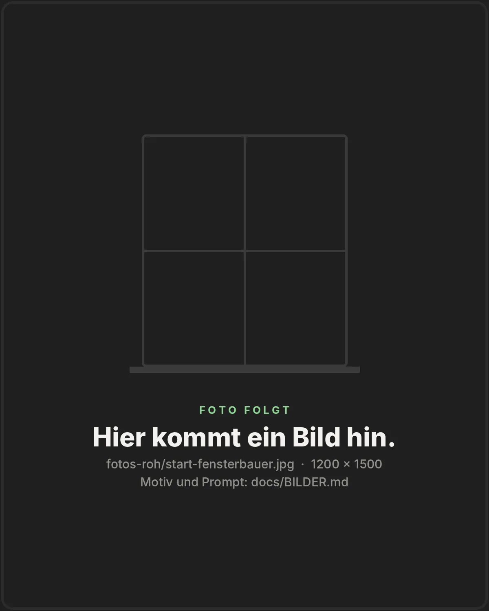

Designrichtung · 23.10.2026
Eine dunkle Bühne, ein Held je Bildschirm, Licht mit Quelle und Präzision bis ins Detail.
Für Fensterbauer und Fensterhändler
Glas 60 % · Weich 24 pxLicht aus dem BullaugeMaßlinieStaub im Licht
Bühne · Inter 800 · 32 / 40 px
Technik · Inter 600 · 13 px · gesperrt
Lesetext · 17 px · Schlüsselwörter hell
Ihre Kunden planen ihre Fenster selbst, mit 3-D-Modell und Fotos. Sie bekommen jede Anfrage als fertiges Aufmaßblatt.
Zahl als Held
0€Gebühr je Anfrage
Anteil der Fläche · mindestens 80 % unbunt
Licht nur mit Quelle
KabineCream
ErdeBlau
SignalGrün
Glas nur über Bildern

Render aus unserer WebGL-BühneApp-Bildschirm echtRiesenwort als Grafik



Karten gedreht 2–3°Dateiname in der TechnikstimmeAnschnitt am Rand
bis Ihr Konfigurator online ist
Gebühr je Anfrage
je Anfrage, per E‑Mail
je Fenster, etwa
Explosionsansicht · was der Konfigurator erfasst
Kapitelanzeige · Maßstab statt Tacho